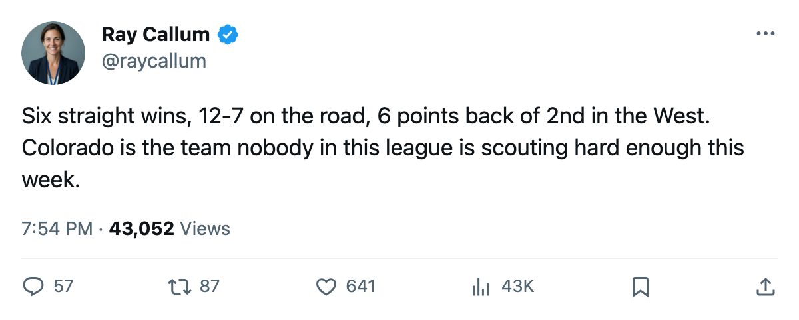
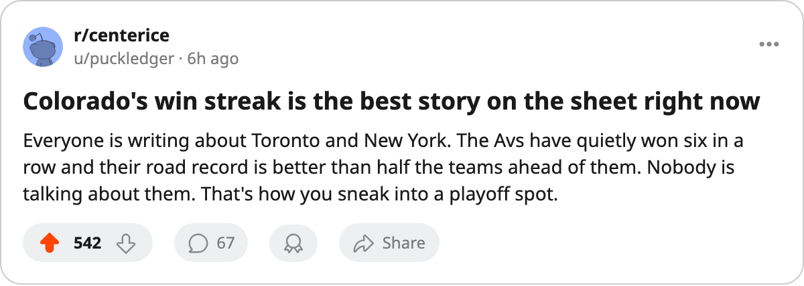

Numbers Game: Colorado Has Won 6 Straight and Nobody Has Noticed
The Avalanche are 5th in the West, 12-7 on the road, and 6 points back of 2nd place
 Ray CallumSenior correspondent · Home Ice Network
Ray CallumSenior correspondent · Home Ice NetworkThe piece
 Colorado Avalanche beat
Colorado Avalanche beat  Mighty Ducks of Anaheim 4-3 on January 9. That was the 6th straight win. The Avalanche are 19-12-7 with 53 points and sit 5th in the Western Conference, 6 points behind 2nd-place
Mighty Ducks of Anaheim 4-3 on January 9. That was the 6th straight win. The Avalanche are 19-12-7 with 53 points and sit 5th in the Western Conference, 6 points behind 2nd-place  St. Louis Blues.
St. Louis Blues.
No desk has printed a word about them in this window.
The road team nobody guards
Colorado is 12-7 away from Mile High, which is better than 2 of the 4 clubs ahead of them in the conference. St. Louis Blues is 14-7 on the road.  Columbus Blue Jackets is 11-10.
Columbus Blue Jackets is 11-10.  Nashville Predators is 8-12. The Avalanche are the 2nd-best road team in the West.
Nashville Predators is 8-12. The Avalanche are the 2nd-best road team in the West.
The last 10 games: 6 regulation wins, 1 overtime loss, 1 regulation loss. The goals are 32 for, 24 against. The +8 goal differential in that span has them climbing.
 Jamie Storr85 has started 29 of 42 games, a .69 share.
Jamie Storr85 has started 29 of 42 games, a .69 share.  Trevor Kidd83 has 12. The goaltending split is close to even. What has changed is the offense: 32 goals in the last 10, against 113 on the season in 42 games. The first 32 games produced 81 of those 113. The last 10 are carrying the weight.
Trevor Kidd83 has 12. The goaltending split is close to even. What has changed is the offense: 32 goals in the last 10, against 113 on the season in 42 games. The first 32 games produced 81 of those 113. The last 10 are carrying the weight.
The injury list that cleared
 Adam Foote86 went down between January 8 and January 10, his 4th trip of the season. He is the only Avalanche on the current injured list. Colorado carries 30 spells and 100 days lost across the year, which is the 5th-fewest in the league.
Adam Foote86 went down between January 8 and January 10, his 4th trip of the season. He is the only Avalanche on the current injured list. Colorado carries 30 spells and 100 days lost across the year, which is the 5th-fewest in the league.
The schedule this week is kind: at  Carolina Hurricanes on January 12 (Carolina is 11-18-6 on a 3-game loss streak), at
Carolina Hurricanes on January 12 (Carolina is 11-18-6 on a 3-game loss streak), at  Boston Bruins on January 13, at
Boston Bruins on January 13, at  Philadelphia Flyers on January 16. Three of those four opponents are under .500 or on a losing streak.
Philadelphia Flyers on January 16. Three of those four opponents are under .500 or on a losing streak.
What it means by March
The Western Conference playoff line sits at 47 points, which is where  Calgary Flames stands in 8th. Colorado is 6 points ahead of that line with 40 games left. The gap between 2nd and 5th is 4 points. The gap between 5th and 8th is 6. The Avalanche are closer to the top than to the bottom of that range.
Calgary Flames stands in 8th. Colorado is 6 points ahead of that line with 40 games left. The gap between 2nd and 5th is 4 points. The gap between 5th and 8th is 6. The Avalanche are closer to the top than to the bottom of that range.
They have the same roster that finished last season. The difference is a 6-game heater and a road schedule that keeps handing them opponents below .500. If the heater holds through the January trip, the standings will force someone to write about them.

